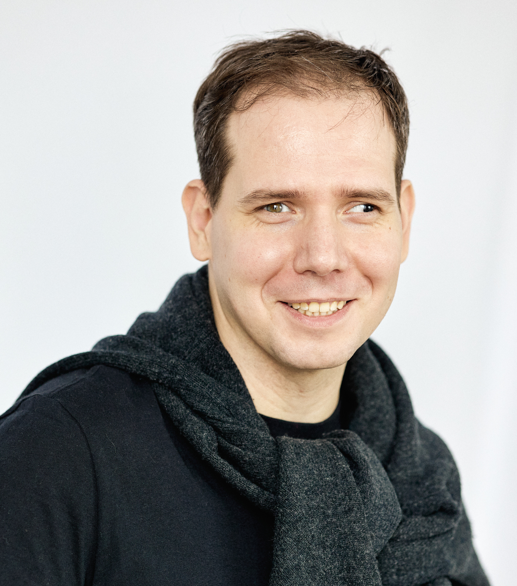

Про работу
Терапевтическая группа для тех, у кого работа это не просто деньги.
Список тем, с которыми можно работать на группе очень широк. Среди них, например
- Как сделать так, чтобы работа приносила удовольствие
- Как найти и следовать своему призванию.
- Как переживать творческий кризис и выгорание
- Как работать в команде
- Как продвигать свои интересы без ущерба для общего дела
- Как делать что-то, что реально кому-то нужно.
- Как переживать неудачи
- Как найти грань между смелостью и безрассудством, принять рискованное карьерное решение
- Как поддерживать баланс между работой и личной жизнью
Список тем условен. Работа строиться исходя из актуальных потребностей участников.
Если сомневаетесь, возможна ли работа с вашим запросом в терапевтической группе – пишите , обсудим.
Ведущие группы
Иванов Алексей – гештальт-терапевт с IT background'ом
Окончил 2-ую ступень МГИ, специализацию по ведению групп.